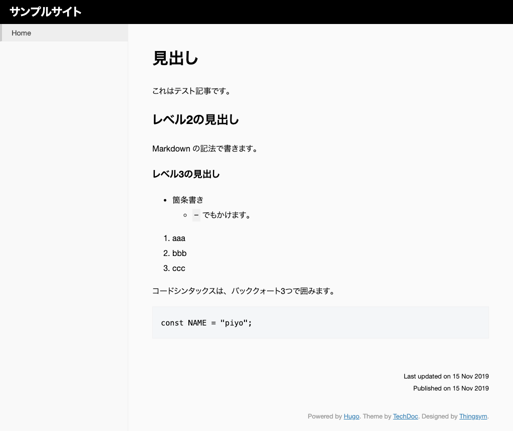
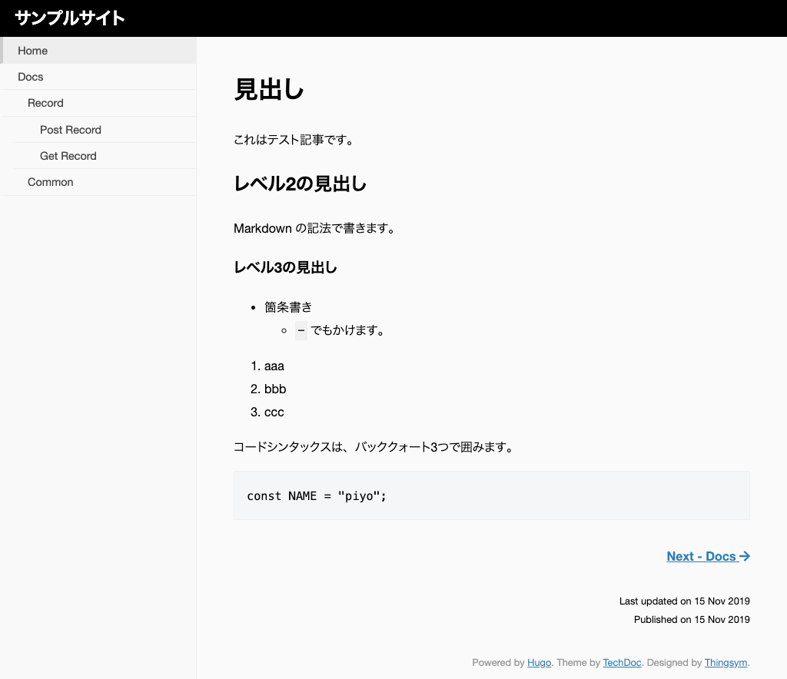

コンテンツ（記事）を作成する¶
コンテンツとなる記事を作成する方法です。
ファイルの追加¶
概要¶
コンテンツファイルは「content」ディレクトリーの下に追加します。
手順¶
-
コンテンツを追加するには、
hugo new ファイル名.mdコマンドを実行します。1
$ hugo new _index.md
-
「content」ディレクトリーの下に
_index.mdが作成されます。1 2 3 4 5 6 7
$ hugo new _index.md /Users/username/Sites/example/content/docs/common.md created . ├── ... ├── content │ └── _index.md ├── ...
-
_index.mdを開いて編集します。1 2 3 4 5 6 7 8 9
--- title: "" date: 2019-11-15T12:56:53+09:00 draft: true --- - 「---」で囲われた部分を、**Front matter** と呼びます。 - Front matter には記事のメタ情報を記載します。 - 記事の中身は Front matter より下に記載します。
-
記事タイトルを入力します。Front matter の
titleに値を設定します。1 2 3 4 5
--- title: "Hello World" date: 2019-11-15T12:56:53+09:00 draft: true ---
-
下書きフラグ
draftをfalseにして、ファイルがビルドされるようにします。1 2 3 4 5
--- title: "Hello World" date: 2019-11-15T12:56:53+09:00 draft: false ---
-
記事の内容を Front matter 以下に記述します。
1 2 3 4 5 6 7 8 9 10 11 12 13 14 15 16 17 18 19 20 21 22 23 24 25 26
--- title: "Hello World" date: 2019-11-15T14:57:21+09:00 draft: false --- + # 見出し + これはテスト記事です。 + ## レベル2の見出し + Markdown 記法で書きます。 + ### レベル3の見出し + * 箇条書き + - `-` でもかけます。 + 1. aaa + 2. bbb + 3. ccc + コードシンタックスは、バッククォート3つで囲みます。 + ``` + const NAME = "piyo"; + ```
-
ファイルの変更を上書き保存し、もう一度ブラウザで確認します（開発サーバを起動済みの場合は、以下のコマンドは不要です）。
1
$ hugo server
-
記事の内容が反映されました。

Note
Front matter について¶
Front matter は、YAML 形式、TOML 形式、または JSON 形式で定義できます。
| パラメータ | 説明 | 備考 |
|---|---|---|
| title | 記事のタイトル | |
| date | 記事の日付 | 省略可能ですが、ブログなど作成日時でソートしたい場合などはつけたほうが良いです。 |
| draft | 下書きフラグ | - 本番に記事を反映するには値を true にするか、draft パラメータを省略します。- 下書き状態でプレビューする場合は hugo serve -D として - Dオプションを指定します。 |
その他 HUGO 標準で指定できる値は、Front matter に記載されています。
Note
hugo new ファイル名.md コマンドで追加しなくても、「content」ディレクトリ以下にファイルを作成し、Front matter を追記することでも記事を追加できます。
セクションの追加¶
概要¶
HUGO では、「content」ディレクトリーの下にフォルダーを追加し、階層構造を作ることができます。 このときの階層を「セクション」と呼びます。
1 2 3 4 5 6 7 8 9 10 11 | content ├── docs # Section │ └── record # Section │ │ ├── get-record.md │ │ ├── post-record.md │ │ └── _index.md │ ├── common.md │ └── _index.md ├── tips # Section │ └── ... └──_index.md |
手順¶
-
「techdoc」のv0.4 以降からセクションツリーを表示するには
menu_styleプロパティをconfig.tomlに追記します。1 2 3 4 5
baseURL = "http://example.org/" languageCode = "en-us" title = "サンプルサイト" theme = "techdoc" menu_style = "open-menu"
-
「content」ディレクトリーの下に「docs」というフォルダーを作成します。
1
$ mkdir content/docs
-
hugo new ファイル名コマンドで、docs のトップページと common ページのファイルを追加します。1 2
$ hugo new docs/_index.md $ hugo new docs/common.md
Note
- セクションの LP（セクションページ）のファイル名は、
_index.mdにします。 - それ以外は好きに付けることができます。ファイル名はサイトのページ URL になります。
- ファイル名が「docs/common.md」の場合、URL は「https://example.com/docs/common/」です。
- セクションの LP（セクションページ）のファイル名は、
-
さらにその下の階層も作ってみましょう。
1 2 3
$ hugo new docs/record/_index.md $ hugo new docs/record/get-record.md $ hugo new docs/record/post-record.md
-
最終的に「content」以下の構成は、次のようになります。
1 2 3 4 5 6 7 8 9
content ├── docs # Section │ └── record # Section │ │ ├── get-record.md │ │ ├── post-record.md │ │ └── _index.md │ ├── common.md │ └── _index.md └──_index.md
-
「docs」セクションの下に「record」セクションが追加されました。
-
作成したファイルを適当に編集します。 ただし、
draftの値はfalseに変更して下書きモードをオフにします。 -
ブラウザ（開発サーバを起動済みの場合は、以下のコマンドは不要です）で確認します。
